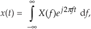

9 The Discrete Hilbert Transform
The discrete Hilbert transform is a process used to generate complex-valued signals from real-valued signals. Using complex signals in lieu of the real signals simplifies and improves the performance of many signal processing operations. If you’ve read about the discrete Hilbert transform in the DSP literature, you’ve probably plowed through the mathematical descriptions of analytic functions, with the constraints on their z-transforms in their regions of convergence, and perhaps you’ve encountered the Cauchy integral theorem used in the definition of the Hilbert transform.† Well, the discrete Hilbert transform is not as complicated as it first appears; this chapter attempts to support that claim.
† The Hilbert transform is named in honor of the great German mathematician David Hilbert (1862–1943). On his tomb in Göttingen, Germany, is inscribed, “Wir müssen wissen, wir werden wissen.” (We need to know, we shall know.)
Here we gently introduce the Hilbert transform from a practical standpoint, explain the mathematics behind its description, and show how it’s used in DSP systems. In addition to providing some of the algebraic steps missing from some textbooks, we’ll illustrate the time- and frequency-domain characteristics of the transform, with an emphasis on the physical meaning of the quadrature (complex) signals associated with Hilbert transform applications. Finally, nonrecursive Hilbert transformer design examples and techniques for generating complex, so-called analytic signals are presented. (If you’re not well versed in the notation and behavior of complex signals at this point, a review of Chapter 8 would be useful.)
9.1 Hilbert Transform Definition
The Hilbert transform (HT) is a mathematical process performed on a real signal xr(t), yielding a new real signal xht(t), as shown in Figure 9-1.
Figure 9-1 The notation used to define the continuous Hilbert transform.
Our goal here is to ensure that xht(t) is a 90-degree phase-shifted version of xr(t). So, before we carry on, let’s make sure we understand the notation used in Figure 9-1. The variables are defined as follows:
We’ll clarify that xht(t) = h(t)*xr(t), where the * symbol means convolution. In addition, we can define the spectrum of xht(t) as Xht(ω) = H(ω)·Xr(ω). (These relationships sure make the HT look like a filter, don’t they? We’ll cogitate on this notion again later in this chapter.)
Describing how the new xht(t) signal, the HT of xr(t), differs from the original xr(t) is most succinctly done by relating their Fourier transforms, Xr(ω) and Xht(ω). In words, we can say that all of xht(t)’s positive-frequency components are equal to xr(t)’s positive-frequency components shifted in phase by –90 degrees. Also, all of xht(t)’s negative-frequency components are equal to xr(t)’s negative-frequency components shifted in phase by +90 degrees. Mathematically, we recall
where H(ω) = –j over the positive-frequency range, and H(ω) = +j over the negative-frequency range. We show the nonzero imaginary part of H(ω) in Figure 9-2(a).
Figure 9-2 The complex frequency response of H(ω).
To fully depict the complex H(ω), we show it as floating in a three-dimensional space in Figure 9-2(b). The bold curve is our complex H(ω). On the right side is an upright plane on which we can project the imaginary part of H(ω). At the bottom of Figure 9-2(b) is a flat plane on which we can project the real part of H(ω). In rectangular notation, we say that H(ω) = 0 +j1 for negative frequencies and H(ω) = 0 −j1 for positive frequencies. (We introduce the three-dimensional axes of Figure 9-2(b) now because we’ll be using them to look at other complex frequency-domain functions later in this discussion.)
To show a simple example of an HT, and to reinforce our graphical viewpoint, Figure 9-3(a) shows the three-dimensional time and frequency representations of a real cosine wave cos(ωt). Figure 9-3(b) shows the HT of cos(ωt) to be the sinewave sin(ωt).
Figure 9-3 The Hilbert transform: (a) cos(ωt); (b) its transform is sin(ωt).

The complex spectrum on the right side of Figure 9-3(b) shows how the HT rotates the cosine wave’s positive-frequency spectral component by –j, and the cosine wave’s negative-frequency spectral component by +j. You can see on the right side of Figure 9-3 that our definition of the +j multiplication operation is a +90-degree rotation of a spectral component counterclockwise about the frequency axis. (The length of those spectral components is half the peak amplitude of the original cosine wave.) We’re assuming those sinusoids on the left in Figure 9-3 exist for all time, and this allows us to show their spectra as infinitely narrow impulses in the frequency domain.
Now that we have this frequency response of the HT defined, it’s reasonable for the beginner to ask: “Why would anyone want a process whose frequency-domain response is that weird H(ω) in Figure 9-2(b)?”
9.2 Why Care about the Hilbert Transform?
The answer is: We need to understand the HT because it’s useful in so many complex-signal (quadrature) processing applications. A brief search on the Internet reveals HT-related signal processing techniques being used in the following applications:
• Quadrature modulation and demodulation (communications)
• Automatic gain control (AGC)
• Analysis of two- and three-dimensional complex signals
• Medical imaging, seismic data and ocean wave analysis
• Instantaneous frequency estimation
• Radar/sonar signal processing, and time-domain signal analysis using wavelets
• Time difference of arrival (TDOA) measurements
• High-definition television (HDTV) receivers
• Loudspeaker, room acoustics, and mechanical vibration analysis
• Audio and color image compression
• Nonlinear and nonstationary system analysis
All of these applications employ the HT either to generate or to measure complex time-domain signals, and that’s where the HT’s power lies. The HT delivers to us, literally, another dimension of signal processing capabilities as we move from two-dimensional real signals to three-dimensional complex signals. Here’s how.
Let’s consider a few mathematical definitions. If we start with a real time-domain signal xr(t), we can associate with it a complex signal xc(t), defined as
The complex xc(t) signal is known as an analytic signal (because it has no negative-frequency spectral components), and its real part is equal to the original real input signal xr(t). The key here is that xc(t)’s imaginary part, xi(t), is the HT of the original xr(t) as shown in Figure 9-4.
Figure 9-4 Functional relationship between the xc(t) and xr(t) signals.
As we’ll see shortly, in many real-world signal processing situations xc(t) is easier, or more meaningful, to work with than the original xr(t). Before we see why that is true, we’ll explore xc(t) further to attempt to give it some physical meaning. Consider a real xr(t) = cos(ωot) signal that’s simply four cycles of a cosine wave and its HT xi(t) sinewave as shown in Figure 9-5. The xc(t) analytic signal is the bold corkscrew function.
Figure 9-5 The Hilbert transform and the analytic signal of cos(ωot).
We can describe xc(t) as a complex exponential using one of Euler’s equations. That is:
The spectra of those signals in Eq. (9-3) are shown in Figure 9-6. Notice three things in Figure 9-6. First, following the relationships in Eq. (9-3), if we rotate Xi(ω) by +90 degrees counterclockwise (+j) and add it to Xr(ω), we get Xc(ω) = Xr(ω)+jXi(ω). Second, note how the magnitude of the component in Xc(ω) is double the magnitudes in Xr(ω). Third, notice how Xc(ω) is zero over the negative-frequency range. This property of zero spectral content for negative frequencies is why Xc(ω) is called an analytic signal. Some people call Xc(ω) a one-sided spectrum.
Figure 9-6 HT spectra: (a) spectrum of cos(ωot); (b) spectrum of the Hilbert transform of cos(ωot), sin(ωot); (c) spectrum of the analytic signal of cos(ωot), ejωot.
To appreciate the physical meaning of our discussion here, let’s remember that the xc(t) signal is not just a mathematical abstraction. We can generate xc(t) in our laboratory and route it via cables to the laboratory down the hall. (This idea is described in Section 8.3.)
To illustrate the utility of this analytic signal xc(t) notion, let’s see how analytic signals are very useful in measuring instantaneous characteristics of a time-domain signal: measuring the magnitude, phase, or frequency of a signal at some given instant in time. This idea of instantaneous measurements doesn’t seem so profound when we think of characterizing, say, a pure sinewave. But if we think of a more complicated signal, like a modulated sinewave, instantaneous measurements can be very meaningful. If a real sinewave xr(t) is amplitude modulated so its envelope contains information, from an analytic version of the signal we can measure the instantaneous envelope E(t) value using
That is, the envelope of the signal is equal to the magnitude of xc(t). We show a simple example of this AM demodulation idea in Figure 9-7(a), where a sinusoidal signal is amplitude modulated by a low-frequency sinusoid (dashed curve). To recover the modulating waveform, traditional AM demodulation would rectify the amplitude-modulated sinewave, xr(t), and pass the result through a lowpass filter. The filter’s output is represented by the solid curve in Figure 9-7(b) representing the modulating waveform. Instead, we can compute the HT of xr(t), yielding xi(t), and use xi(t) to generate the xc(t) = xr(t) + jxi(t) analytic version of xr(t). Finally, we compute the magnitude of xc(t) using Eq. (9-4) to extract the modulating waveform shown as the bold solid curve in Figure 9-7(c). The |xc(t)| function is a much more accurate representation of the modulating waveform than the solid curve in Figure 9-7(b).
Figure 9-7 Envelope detection: (a) input xr(t) signal; (b) traditional lowpass filtering of |xr(t)|; (c) complex envelope detection result |xc(t)|.
Suppose, on the other hand, some real xr(t) sinewave is phase modulated. We can estimate xc(t)’s instantaneous phase ø(t), using

Computing ø(t) is equivalent to phase demodulation of xr(t). Likewise (and more often implemented), should a real sinewave carrier be frequency modulated, we can measure its instantaneous frequency F(t) by calculating the instantaneous time rate of change of xc(t)’s instantaneous phase using
The process in Eq. (9-6) is a form of digital differentiation, a topic we discuss in some detail in Chapter 7.
Calculating F(t) is equivalent to frequency demodulation of xr(t). By the way, if ø(t) is measured in radians, then F(t) in Eq. (9-6) is measured in radians/second. Dividing F(t) by 2π will give it dimensions of Hz. (Another frequency demodulation method is discussed in Section 13.22.)
For another HT application, consider a real xr(t) signal whose |Xr(ω)| spectral magnitude is centered at 25 kHz as shown in Figure 9-8(a). Suppose we wanted to translate that spectrum to be centered at 20 kHz. We could multiply xr(t) by the real sinusoid cos(2π5000t) to obtain a real signal whose spectrum is shown in Figure 9-8(b). The problem with this approach is we’d need an impractically high-performance filter (the dashed curve) to eliminate those unwanted high-frequency spectral images.
Figure 9-8 Spectra associated with frequency translation of a real signal xr(t).
On the other hand, if we compute the HT of xr(t) to obtain xi(t), and combine the two signals to form the analytic signal xc(t) = xr(t)+jxi(t), we’ll have the complex xc(t) whose one-sided spectrum is given in Figure 9-8(c). Next we multiply the complex xc(t) by the complex e–j2π5000t, yielding a frequency-translated xout(t) complex signal whose spectrum is shown in Figure 9-8(d). Our final step is to take the real part of xout(t) to obtain a real signal with the desired spectrum centered about 20 kHz, as shown in Figure 9-8(e).
Now that we’re convinced of the utility of the HT, let’s determine the HT’s time-domain impulse response and use it to build Hilbert transformers.
9.3 Impulse Response of a Hilbert Transformer
Instead of following tradition and just writing down the impulse response equation for a device that performs the HT, we’ll show how to arrive at that expression. To determine the HT’s impulse response expression, we take the inverse Fourier transform of the HT’s frequency response H(ω). The garden-variety continuous inverse Fourier transform of an arbitrary frequency function X(f) is defined as

where f is frequency measured in cycles/second (hertz). We’ll make three changes to Eq. (9-7). First, in terms of our original frequency variable ω = 2πf radians/second, and because df = dω/2π, we substitute dω/2π for the df term. Second, because we know our discrete frequency response will be periodic with a repetition interval of the sampling frequency ωs, we’ll evaluate Eq. (9-7) over the frequency limits of –ωs/2 to +ωs/2. Third, we partition the original integral into two separate integrals. This algebraic massaging gives us the following:
Whew! OK, we’re going to plot this impulse response shortly, but first we have one hurdle to overcome. Heartache occurs when we plug t = 0 into Eq. (9-8) because we end up with the indeterminate ratio 0/0. Hardcore mathematics to the rescue here. We merely pull out the Marquis de L’Hopital’s Rule, take the time derivatives of the numerator and denominator in Eq. (9-8), and then set t = 0 to determine h(0). Following through on this:
So now we know that h(0) = 0. Let’s find the discrete version of Eq. (9-8) because that’s the form we can model in software and actually use in our DSP work. We can go digital by substituting the discrete-time variable nts for the continuous-time variable t in Eq. (9-8). Using the following definitions
n = discrete time-domain integer index (...,–3,–2,–1,0,1,2,3,...)
fs = sample rate measured in samples/second
ts = time between samples, measured in seconds (ts = 1/fs)
ωs = 2πfs
we can rewrite Eq. (9-8) in discrete form as
Substituting 2πfs for ωs, and 1/fs for ts, we have
Finally, we plot HT’s h(n) impulse response in Figure 9-9. The fs term in Eq. (9-11) is simply a scale factor; its value does not affect the shape of h(n). An informed reader might, at this time, say, “Wait a minute. Equation (9-11) doesn‘t look at all like the equation for the HT’s impulse response that’s in my other DSP textbook. What gives?” The reader would be correct because one popular expression in the literature for h(n) is
Figure 9-9 The Hilbert transform’s discrete impulse response when fs = 1.
Here’s the answer: The derivation of Eq. (9-12) is based on the assumption that the fs sampling rate is normalized to unity. If we set fs = 1 in Eq. (9-11), then that new expression will be equal to Eq. (9-12). We leave the proof of that equality as a homework problem.
Looking again at Figure 9-9, we can reinforce the validity of our h(n) derivation. Notice that for n > 0 the values of h(n) are nonzero only when n is odd. In addition, the amplitudes of those nonzero values decrease by factors of 1/1, 1/3, 1/5, 1/7, etc. Of what does that remind you? That’s right, the Fourier series of a periodic squarewave! This makes sense because our h(n) is the inverse Fourier transform of the squarewave-like H(ω) in Figure 9-2. Furthermore, our h(n) is antisymmetric, and this is consistent with a purely imaginary H(ω). (If we were to make h(n) symmetrical by inverting its values for all n < 0, the new sequence would be proportional to the Fourier series of a periodic real squarewave.)
Now that we have the expression for the HT’s impulse response h(n), let’s use it to build a discrete Hilbert transformer.
9.4 Designing a Discrete Hilbert Transformer
Discrete Hilbert transformations can be implemented in either the time or frequency domains. Let’s look at time-domain Hilbert transformers first.
9.4.1 Time-Domain Hilbert Transformation: FIR Filter Implementation
Looking back at Figure 9-4, and having h(n) available, we want to know how to generate the discrete xi(n). Recalling the frequency-domain product in Eq. (9-1), we can say xi(n) is the convolution of xr(n) and h(k). Mathematically, this is
So this means we can implement a Hilbert transformer as a discrete nonrecursive finite impulse response (FIR) filter structure as shown in Figure 9-10.
Figure 9-10 FIR implementation of a K-tap Hilbert transformer.
Designing a traditional time-domain FIR Hilbert transformer amounts to determining those h(k) values so the functional block diagram in Figure 9-4 can be implemented. Our first thought is merely to take the h(n) coefficient values from Eq. (9-11), or Figure 9-9, and use them for the h(k)s in Figure 9-10. That’s almost the right answer. Unfortunately, the Figure 9-9 h(n) sequence is infinite in length, so we have to truncate the sequence. Figuring out what the truncated h(n) should be is where the true design activity takes place.
To start with, we have to decide if our truncated h(n) sequence will have an odd or even length. We make this decision by recalling that FIR implementations having antisymmetric coefficients and an odd, or even, number of taps are called a Type-III, or a Type-IV, system respectively[1–3]. These two antisymmetric filter types have the following unavoidable restrictions with respect to their frequency magnitude responses |H(ω)|:
What this little table tells us is odd-tap Hilbert transformers always have a zero magnitude response at both zero Hz and at half the sample rate. Even-tap Hilbert transformers always have a zero magnitude response at zero Hz. Let’s look at some examples.
Figure 9-11 shows the frequency response of a 15-tap (Type-III, odd-tap) FIR Hilbert transformer whose coefficients are designated as h1(k). These plots have much to teach us.
Figure 9-11 H1(ω) frequency response of h1(k), a 15-tap Hilbert transformer.
1. For example, an odd-tap FIR implementation does indeed have a zero magnitude response at 0 Hz and ±fs/2 Hz. This means odd-tap (Type-III) FIR implementations turn out to be bandpass in performance.
2. There’s ripple in the H1(ω) passband. We should have expected this because we were unable to use an infinite number of h1(k) coefficients. Here, just as it does when we’re designing standard lowpass FIR filters, truncating the length of the time-domain coefficients causes ripples in the frequency domain. (When we abruptly truncate a function in one domain, Mother Nature pays us back by invoking the Gibbs phenomenon, resulting in ripples in the other domain.) You guessed it. We can reduce the ripple in |H1(ω)| by windowing the truncated h1(k) sequence. However, windowing the coefficients will narrow the bandwidth of H1(ω) somewhat, so using more coefficients may be necessary after windowing is applied. You’ll find windowing the truncated h1(k) sequence to be to your advantage.
3. It’s exceedingly difficult to compute the HT of low-frequency signals. We can widen the passband and reduce the transition region width of H1(ω)’s magnitude response, but that requires many filter taps.
4. The phase response of H1(ω) is linear, as it should be when the coefficients’ absolute values are symmetrical. The slope of the phase curve (that is constant in our case) is proportional to the time delay a signal sequence experiences traversing the FIR filter. More on this in a moment. That discontinuity in the phase response at 0 Hz corresponds to π radians, as Figure 9-2 tells us it should. Whew, good thing. That’s what we were after in the first place!
In our relentless pursuit of correct results, we’re forced to compensate for the linear phase shift of H1(ω)—that constant time value equal to the group delay of the filter—when we generate our analytic xc(n). We do this by delaying, in time, the original xr(n) by an amount equal to the group delay of the h1(k) FIR Hilbert transformer. Recall that the group delay, G, of a tapped-delay line FIR filter, having antisymmetrical coefficients, is G = D/2 samples where D is the number of unit-delay elements in the delay line. So our block diagram for generating a complex xc(n) signal, using an FIR structure, is given in Figure 9-12(a). In this example, the 7-tap Hilbert filter has D = 6 delay elements as shown in Figure 9-12(b). There we delay xr(n) by G = 6/2 = 3 samples, generating the delayed sequence x’r(n). This delayed sequence now aligns properly in time with xi(n).
Figure 9-12 Generating an xc(n) sequence when h(k) is a 7-tap FIR Hilbert filter: (a) processing steps; (b) filter structure.
If you’re building your odd-tap FIR Hilbert transform in hardware, an easy way to obtain x’r(n) is to tap off the original xr(n) sequence at the center tap of the FIR Hilbert transformer structure as in Figure 9-12(b). If you’re modeling Figure 9-12(a) in software, the x’r(n) sequence can be had by inserting G = 3 zeros at the beginning of the original xr(n) sequence.
We can, for example, implement an FIR Hilbert transformer using a Type-IV FIR structure, with its even number of taps. Figure 9-13 shows this notion where the coefficients are, say, h2(k). See how the frequency magnitude response is nonzero at ±fs/2 Hz. Thus this even-tap filter approximates an ideal Hilbert transformer somewhat better than an odd-tap implementation.
Figure 9-13 H2(ω) frequency response of h2(k), a 14-tap Hilbert transformer.
One of the problems with this traditional Hilbert transformer is that the passband gain in |H2(ω)| is not unity for all frequencies, as is the x’r(n) path in Figure 9-12. So to minimize errors, we must use many h2(k) coefficients (or window the coefficients) to make |H2(ω)|’s passband as flat as possible.
Although not shown here, the negative slope of the phase response of H2(ω) corresponds to a filter group delay of G = (14–1)/2 = 6.5 samples. This requires us to delay the original xr(n) sequence by a noninteger (fractional) number of samples in order to achieve time alignment with xi(n). Fractional time-delay filters are beyond the scope of this material, but reference [4] is a source of further information on the topic.
Let’s recall that alternate coefficients of a Type-III (odd-tap) FIR are zeros. Thus the odd-tap Hilbert transformer is more attractive than an even-tap version from a computational workload standpoint. Almost half of the multiplications in Figure 9-10 can be eliminated for a Type-III FIR Hilbert transformer. Designers might even be able to further reduce the number of multiplications by a factor of two by using the folded FIR structure (discussed in Section 13.7) that’s possible with symmetric coefficients (keeping in mind that half the coefficients are negative).
A brief warning: Here’s a mistake sometimes even the professionals make. When we design standard linear-phase FIR filters, we calculate the coefficients and then use them in our hardware or software designs. Sometimes we forget to flip the coefficients before we use them in an FIR filter. This forgetfulness usually doesn’t hurt us because typical FIR coefficients are symmetrical. Not so with FIR Hilbert filters, so please don’t forget to reverse the order of your coefficients before you use them for convolutional filtering. Failing to flip the coefficients will distort the desired HT phase response.
As an aside, Hilbert transformers can be built with IIR filter structures, and in some cases they’re more computationally efficient than FIR Hilbert transformers at the expense of a slight degradation in the 90-degree phase difference between xr(n) and xi(n)[5,6].
9.4.2 Frequency-Domain Hilbert Transformation
Here’s a frequency-domain Hilbert processing scheme deserving mention because the HT of xr(n) and the analytic xc(n) sequence can be generated simultaneously. We merely take an N-point DFT of a real even-length-N xr(n) signal sequence, obtaining the discrete Xr(m) spectrum given in Figure 9-14(a). Next, create a new spectrum Xc(m) = 2Xr(m). Set the negative-frequency Xc(m) samples, that’s (N/2)+1 ≤ m ≤ N–1, to zero, leaving us with a new one-sided Xc(m) spectrum as in Figure 9-14(b). Next, divide the Xc(0) (the DC term) and the Xc(N/2) spectral samples by 2. Finally, we perform an N-point inverse DFT of the new Xc(m), the result being the desired analytic xc(n) time-domain sequence. The real part of xc(n) is the original xr(n), and the imaginary part of xc(n) is the HT of xr(n). Done!
Figure 9-14 Spectrum of the original xr(n) sequence, and the one-sided spectrum of the analytic xc(n) sequence.
There are several issues to keep in mind concerning this straightforward frequency-domain analytic signal generation scheme:
1. If possible, restrict the xr(n) input sequence length to an integer power of two so the radix-2 FFT algorithm can be used to efficiently compute the DFT.
2. Make sure the Xc(m) sequence has the same length as the original Xr(m) sequence. Remember, you zero out the negative-frequency Xc(m) samples; you don’t discard them.
3. The factor of two in the above Xc(m) = 2Xr(m) assignment compensates for the amplitude loss by a factor of two in losing the negative-frequency spectral energy.
4. If your HT application is block-oriented in the sense that you only have to generate the analytic sequence from a fixed-length real-time sequence, this technique is sure worth thinking about because there’s no time delay heartache associated with time-domain FIR implementations to worry about. With the advent of fast hardware DSP chips and pipelined FFT techniques, the above analytic signal generation scheme may be viable for a number of applications. One scenario to consider is using the efficient 2N-Point Real FFT technique, described in Section 13.5.2, to compute the forward DFT of the real-valued xr(n). Of course, the thoughtful engineer would conduct a literature search to see what algorithms are available for efficiently performing inverse FFTs when many of the frequency-domain samples are zeros.
Should you desire a decimated-by-two analytic x’c(n) sequence based on xr(n), it’s easy to do, thanks to reference [7]. First, compute the N-point Xr(m). Next, create a new spectral sequence X’c(k) = 2Xr(k) for 1 ≤ k ≤ (N/2)-1. Set X’c(0) equal to Xr(0) + Xr(N/2). Finally, compute the (N/2)-point inverse DFT of X’c(m), yielding the decimated-by-two analytic x’c(n). The x’c(n) sequence has a sample rate of f’s = fs/2 and the spectrum shown in Figure 9-14(c).
In Section 13.28.2 we discuss a scheme to generate interpolated analytic signals from xr(n).
9.5 Time-Domain Analytic Signal Generation
In digital communications applications, the FIR implementation of the HT (such as that in Figure 9-12(b)) is used to generate a complex analytic signal xc(n). Some practitioners now use a time-domain complex filtering technique to achieve analytic signal generation when dealing with real bandpass signals[8]. This scheme, which does not specifically perform the HT of an input sequence xr(n), uses a complex filter implemented with two real FIR filters with essentially equal magnitude responses, but whose phase responses differ by exactly 90 degrees, as shown in Figure 9-15.
Figure 9-15 Generating an xc(n) sequence with a complex filter (two real FIR filters).
Here’s how it’s done. A standard K-tap FIR lowpass filter is designed, using your favorite FIR design software, to have a two-sided bandwidth slightly wider than the original real bandpass signal of interest. The real coefficients of the lowpass filter, hLP(k), are then multiplied by the complex exponential mix(k) sequence specified by
using the following definitions:
k = time index term of the exponential mixing sequence (k = 0, 1, 2, ..., K–1)
D = time delay of the K-tap lowpass filter, D = (K–1)/2
fc = bandpass signal’s center frequency, in Hz
fs = sample rate of the original xr(n) bandpass signal sequence in Hz
The results of the hLP(k) times mix(k) multiplication are complex coefficients whose rectangular-form representation is
creating a complex bandpass filter centered at fc Hz. The delay value D in Eq. (9-14) ensures that the hcos(k) and hsin(k) coefficients are symmetrical (or antisymmetrical) to obtain a linear-phase complex filter[9].
Next we use the real and imaginary parts of the filter’s hBP(k) coefficients in two separate real-valued-coefficient FIR filters as shown in Figure 9-15. In DSP parlance, the filter producing the xI(n) sequence is called the I-channel for in-phase, and the filter generating xQ(n) is called the Q-channel for quadrature phase. There are several interesting aspects of this mixing analytic signal generation scheme in Figure 9-15:
1. The mixing of the hLP(k) coefficients by mix(k) induces a loss, by a factor of two, in the frequency magnitude responses of the two real FIR filters. Doubling the hLP(k) values before mixing will eliminate the loss.
2. We can window the hLP(k) coefficients before mixing to reduce the passband ripple in, and to minimize differences between, the magnitude responses of the two real filters. (We’d like to keep the passband gains as similar as possible.) Of course, windowing will degrade the lowpass filter’s roll-off somewhat, so using more coefficients may be necessary before windowing is applied.
3. Odd- or even-tap lowpass filters can be used, with equal ease, in this technique.
4. Because the hcos(k) or hsin(k) coefficients are exactly symmetrical, or exactly antisymmetrical, the folded FIR structure (see Section 13.7) can be used to reduce the number of multiplies per filter output sample by roughly a factor of two.
5. If the original bandpass signal and the complex filter are centered at one-fourth the sample rate (fo = fs/4), count your blessings. In this case we set D = 0 in Eq. (9-14), making nearly half the coefficients of each real filter zero-valued, maintaining linear phase, and reduce our FIR computational workload further by a factor of two.
6. A particularly efficient complex bandpass filter is a lowpass half-band FIR filter whose center frequency has been translated to fc = fs/4. The result is that half the hsin(k) coefficients are zeros, and all but one of the hcos(k) coefficients are zeros! (Two specialized analytic signal generation schemes using half-band filters are described in Sections 13.1 and 13.37.)
7. For hardware applications, both of the two real FIR filters in Figure 9-15 must be implemented. If your analytic signal generation is strictly a high-level software language exercise, such as using MATLAB, the language being used may allow hBP(k) to be implemented as a single complex filter.
Keep in mind, now, that the xQ(n) sequence in Figure 9-15 is not the Hilbert transform of the xr(n) input. That wasn’t our goal here. Our intent was to generate an analytic xc(n) sequence whose xQ(n) quadrature component is the Hilbert transform of the xI(n) in-phase sequence.
9.6 Comparing Analytic Signal Generation Methods
Time-domain FIR Hilbert transformer design is essentially an exercise in lowpass filter design. As such, an ideal discrete FIR Hilbert transformer, like an ideal lowpass FIR filter, cannot be achieved in practice. Fortunately, we can usually ensure that the bandpass of our Figure 9-12 Hilbert transformer covers the bandwidth of the xr(n) input signal. The Figure 9-12 Hilbert transformer has magnitude roll-off in the xi(n) channel but not in the x’r(n) channel. Using more filter taps improves the transformer’s performance by
• minimizing passband ripple in the xi(n) channel,
• minimizing passband gain differences between the two channels, and
• broadening the transformer’s passband width.
The choice of an odd or even number of taps depends on whether the gain at fs/2 should be zero or not, and whether an integer-sample delay is needed.
For roughly the same passband ripple performance, the complex filter in Figure 9-15 requires a longer impulse response (more filter taps) than the Figure 9-12 Hilbert transformer. However, the complex filter has the nice feature that it actually implements bandpass filtering where the Figure 9-12 Hilbert transformer performs no filtering. A possible drawback of the complex filter method is that the real part of the generated complex signal is not equal to the original real input signal. (That is, xi(n) does not equal xr(n).)
For very high-performance analytic signal generation (where the equivalent Hilbert transformer bandwidth must be very close to the full fs/2 bandwidth, and passband ripple must be very small), the DFT method should be considered. With the DFT method the real part of xc(n) is equal to the real input xr(n). Choosing which of the above analytic signal generation methods to use (or perhaps a complex down-conversion scheme from Chapter 8) in any given application requires modeling with your target computing hardware, using your expected number format (fixed point versus floating point), against the typical input signals you intend to process.
References
[1] Proakis, J., and Manolakis, D. Digital Signal Processing: Principles, Algorithms and Applications, Prentice Hall, Upper Saddle River, New Jersey, 1996, pp. 618, 657.
[2] Rabiner, L., and Gold, B. The Theory and Application of Digital Signal Processing, Prentice Hall, Englewood Cliffs, New Jersey, 1975, pp. 67, 168.
[3] Oppenheim, A., and Schafer, R. Discrete-Time Signal Processing, Prentice Hall, Englewood Cliffs, New Jersey, 1st ed. 1989, 2nd ed. 1999.
[4] Laasko, T., et al. “Splitting the Unit Delay,” IEEE Signal Processing Magazine, January 1996.
[5] Gomes, J., and Petraglia, A. “An Analog Sampled-Data DSB to SSB Converter Using Recursive Hilbert Transformer for Accurate I and Q Channel Matching,” IEEE Trans. on Circuits and Sys.-II, Analog and Digital Signal Processing, Vol. 39. No. 3, March 2002, pp. 177–187.
[6] Ansari, R. “IIR Hilbert Transformers,” IEEE Trans. Acoust., Speech Signal Processing, Vol. 35, August 1987, pp. 1116–1119.
[7] Marple, S., Jr. “Computing the Discrete-Time ‘Analytic’ Signal via FFT,” IEEE Trans. on Signal Proc., Vol. 47, No. 9, September 1999, pp. 2600–2603.
[8] Reilly, A., et al. “Analytic Signal Generation—Tips and Traps,” IEEE Trans. on Signal Proc., Vol. 42, No. 11, November 1994.
[9] Bell, D. Subject: “Hilbert Transform Using FFT Approach,” Internet Newsgroup: comp.dsp, September 28, 2005.
Chapter 9 Problems
9.1 Consider the real-valued continuous xr(t) = cos(ωt) sinusoidal signal applied to the network in Figure P9-1. The “HT” notation means Hilbert transform. Write the algebraic expressions for the signals xa(t) and xb(t). Justify your solutions.
9.2 Consider the real-valued continuous xr(t) sinusoidal signal defined by
xr(t) = Asin(2πfot)
where A is a scalar constant, and fo is a fixed frequency measured in Hz.
(a) Draw the three-dimensional spectrum of the Hilbert transform of xr(t).
(b) What is the equation for the analytic signal whose real part is xr(t), in terms of sin() and cos() functions?
(c) What is the equation for the analytic signal whose real part is xr(t), in complex exponential notation? Show your work.
(d) Is the analytic signal whose real part is xr(t) a positive- or negative-frequency complex exponential? Justify your answer.
(e) On a complex plane, draw the location of the analytic signal whose real part is xr(t), at time t = 0.
9.3 Consider the effect of repeated Hilbert transformations of a real-valued continuous x(t) = cos(ωot) sinusoidal signal, expressed as
u(t) = HT[x(t)]
v(t) = HT[u(t)]
w(t) = HT[v(t)]
y(t) = HT[w(t)]
where “HT[x(t)]” means the Hilbert transform of x(t).
(a) Which of u(t), v(t), w(t), or y(t) equals x(t)? Justify your answer.
(b) Which of u(t), v(t), w(t), or y(t) equals –x(t)? Justify your answer.
(c) Which of u(t), v(t), w(t), or y(t) equals the inverse Hilbert transform of x(t)?
(d) Draw a block diagram of the system that implements the inverse Hilbert transform using just one forward Hilbert transform operation. Use a simple block, as shown in Figure P9-3, to represent a forward Hilbert transform.
9.4 Looking at the odd- and even-length Hilbert transformers’ time-domain impulse responses in the text’s Figures 9-11 and 9-13:
(a) Why should we expect that their frequency magnitude responses are zero (a magnitude null) at zero Hz?
(b) Write the z-domain transfer function for a 6-tap tapped-delay line Hilbert transform filter having coefficients h(0), h(1), h(2), ..., h(5). Evaluate that function to determine the filter’s frequency response at zero Hz.
9.5 Draw the block diagram (the structure) of a real-coefficient 11-tap FIR Hilbert transformer that will compute an xa(n) = x’r(n) + jxi(n) analytic signal associated with a real xr(n) input signal.
9.6 Think about the tapped-delay line FIR Hilbert transformer whose coefficients are shown in Figure P9-6. The coefficients are h(0), h(1), h(2), ..., h(10).
(a) Write the z-domain transfer function polynomial, H(z), for this 11-coefficient Hilbert transformer in terms of the h(k) coefficients and z.
(b) We often describe a Hilbert transformer by the order of the transformer’s z-domain transfer function polynomial. What is the order of the transformer whose coefficients are shown in Figure P9-6?
(c) How many unit-delay elements are needed in the tapped-delay line to implement the Hilbert transformer whose coefficients are shown in Figure P9-6?
(d) How many multipliers are needed in the standard tapped-delay line implementation of this Hilbert transformer?
9.7 The text’s Eq. (9-11) provided the expression for the impulse response of a discrete Hilbert transformer. That expression is repeated here as
The text also presented an alternate expression for the impulse response of a discrete Hilbert transformer, Eq. (9-12), under the assumption that fs is normalized to unity. That alternate expression is repeated here as
Show that the expressions for h(n) and h’(n) are equal.
9.8 Assume that we’ve performed the discrete Fourier transform (DFT) of an N-sample x(n) time-domain sequence to obtain a frequency-domain X(m) sequence. X(m)’s integer frequency index is 0 ≤ m ≤ N–1. If N is even and X(0) = X(N/2) = 0, describe what operations must be performed on X(m) to create a new frequency-domain Xnew(m) sequence whose inverse DFT is the Hilbert transform of x(n). (Stated in different words: How do we perform the Hilbert transform in the frequency domain?)
9.9 In the literature of DSP you may learn that we can design an N-tap Hilbert transformer by first designing an N-tap half-band nonrecursive FIR filter (where N+1 is an integer multiple of four), yielding coefficients h(n). Next, we multiply the half-band filter’s h(n) coefficients by 2sin(πn/2) to obtain the desired hhilb(n) Hilbert transformer coefficients. That is,
hhilb(n) = 2sin(πn/2)h(n).
Not emphasized in the literature, however, is the fact that the above hhilb(n) expression is only valid when the h(n) coefficients’ n index is in the range
where h(0) is the middle coefficient of h(n) as shown for an 11-tap half-band FIR filter in Figure P9-9(a). In this textbook we typically use the more traditional FIR filter coefficient indexing notation of k = 0, 1, 2, ..., N–1 as shown in Figure P9-9(b). What is the correct equation for the hhilb(k) coefficients when the half-band filter’s coefficients are h(k) with index k defined using our standard notation of k = 0, 1, 2, ..., N–1 as shown in Figure P9-9(b)?
9.10 In Section 9.4 we presented a 7-tap (6th-order) FIR Hilbert transformer filter, used to compute the complex sequence xc(n) = x’r(n) + xi(n) based on the real input sequence xr(n), as shown in Figure P9-10.

Clever DSP engineers always seek to reduce the number of multipliers in their systems. Redesign the Hilbert transformer in Figure P9-10 to a form that reduces the number of necessary multiplications per output sample. Draw the block diagram of your new design.
Hint: Write the difference equation for the xi(n) output sequence, and recall the symmetry relationships between the Hilbert transformer filter’s coefficients.
9.11 Similar to the structure in the text’s Figure 9-12:
(a) Draw the block diagram of a tapped-delay line FIR Hilbert transformer filter, having 6 taps, that will generate both x’r(n) and xi(n).
(b) Comment on the practicality of this even-tap implementation relative to building a Hilbert transformer having an odd number of taps. (That is, is an even-tap or an odd-tap Hilbert transformer easier to implement?) Someday, if you’re designing a Hilbert transformer for a real-world project, the answer to this question may be very important!
9.12 In this chapter we discussed the notion of building a tapped-delay line FIR filter whose coefficients are complex-valued. Explain why, or why not, such a filter’s frequency magnitude response is periodic.
9.13 Because an FIR Hilbert transformer is a linear time-invariant (LTI) system, there are two ways to determine its frequency response. The first way is to derive an equation for the transformer’s frequency response as a function of a continuous frequency variable, just as we did for IIR filters in Section 6.4. Given that, we could plot that equation’s magnitude and phase, using software, on our computer screen. The second method to determine a Hilbert transformer’s frequency response is to perform the discrete Fourier transform (DFT) of the Hilbert transformer’s unit impulse response, and plot the magnitude and phase of the DFT results.
(a) Derive the expression for the frequency response of a (K–1)th-order (K taps) Hilbert transformer as a function of a continuous frequency variable ω in the range of –π to +π radians/sample.
(b) If you were to model your equation from Part (a) using software, over what range would you define your continuous frequency variable?
(c) The above Parts (a) and (b) were related to the algebraic method for finding a Hilbert transformer’s frequency response in the form of an equation that is a function of a continuous frequency variable. We can also use the discrete Fourier transform (DFT) to estimate a Hilbert transformer’s frequency response. Provide the equation for the K-point DFT of a (K–1)th-order Hilbert transformer’s unit impulse response.
(d) For a 43rd-order Hilbert transformer, how many frequency-domain samples would result from your Part (c) DFT equation? How can you increase the number of DFT frequency-domain samples to see finer detail (improved granularity) of the Hilbert transformer’s frequency response?
9.14 Determine the closed-form equation, as a function of the number of coefficients K, of the number of multipliers needed by a tapped-delay line FIR Hilbert transformer when K is an odd number. That is, write the expression for Nmults = some function of K. Do not consider the case of a folded delay line structure alluded to in the text.
Hint: Due to the unusual situation when K − 1 is an integer multiple of four, you’ll have to use the mathematical notation of which means the “integer part of number X.”
9.15 Suppose we wish to implement the quadrature processing system in Figure P9-15 where xr(n) is a real-valued sequence whose discrete-time Fourier transform is Xr(ω), and ω is our digital frequency ranging from –π to π radians/sample. The sequences xr(n) and xi(n) are interpreted as the real and imaginary parts of a complex sequence xc(n) = xr(n) + jxi(n). Under the restriction that we want the discrete-time Fourier transform of xc(n) to be defined by

fill in the following blank lines defining the H(ω) network’s frequency response:
That is, what is H(ω) so that Xc(ω) is equal to Xr(ω) for negative frequencies, and equal to zero for positive frequencies. Show your work.
Hint: Begin by writing an expression for Xc(ω) in terms of Xr(ω) and H(ω).
9.16 Consider the network given in Figure P9-16(a) whose input is the complex x(t) = xr(t) + jxi(t) signal, and whose output is the complex y(t) = yr(t) + jyi(t) signal. The block labeled “H” represents a Hilbert transform. The x(t) input has the spectrum shown by the bold arrows in Figure P9-16(b). Using a format similar to Figure P9-16(b), draw the three-dimensional spectrum of the y(t) output.
9.17 Consider the real-valued continuous xr(t) cosine signal shown in Figure P9-17(a). That cosine wave’s peak amplitude fluctuates as follows:

If we generate the analytic xa(t) signal, using a Hilbert transformer as shown in Figure P9-17(b), draw the time-domain magnitude of xa(t).